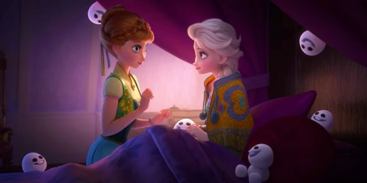

Coronación de la reina Anna de Arendelle
El cortometraje hace un buen trabajo haciendo malabares con varias historias, uniendo todos los hilos en un final que hace llorar. Haciendo referencia al momento más famoso de Frozen, las hermanas revelan que incluso cuando se mantuvieron separadas cuando eran niñas, sus recuerdos de construir un muñeco de nieve juntas (Olaf) las mantuvieron conectadas. La referencia devuelve a la audiencia a su reacción emocional inicial a "¿Quieres construir un muñeco de nieve?" y proporciona un cierre para un momento de dolor trágico y no resuelto en la película.
Frozen Fever is a great example of the short film genre, using every second of its eight minutes of screen time to show a new aspect of the relationship between Anna and Elsa. The sisters' bond is the heart of Frozen (literally), but what happens after they restart their friendship? Frozen Fever shows that even after the sisters find each other again, it's not all smooth sailing. Ultimately, Frozen Fever just edges out Olaf's Frozen Adventure because of its more compact length and straightforward storyline, even answering a question about the fate of Hans.
Once Upon A Snowman es esencialmente un estudio del personaje de Olaf, que responde a una variedad de preguntas sobre quién es y cómo llegó a ser. Una de las mayores revelaciones es sobre cómo Olaf llegó a amar el verano, justificando su canción de 2 minutos en la primera película. El encuentro de Olaf con el Norwegian Oaken lo deja con una nueva pasión y continúa su búsqueda de la nariz perfecta.